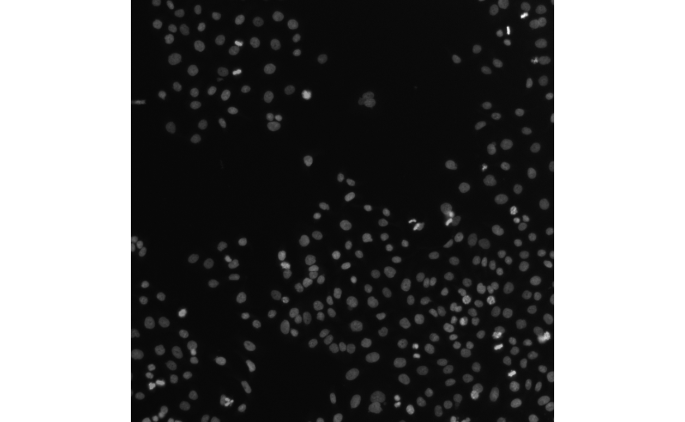
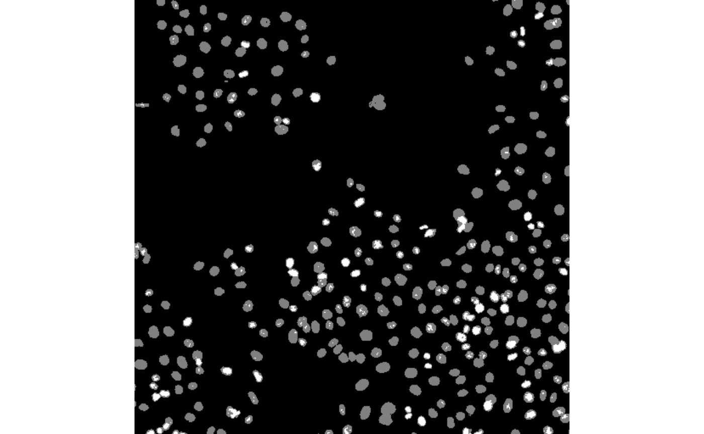
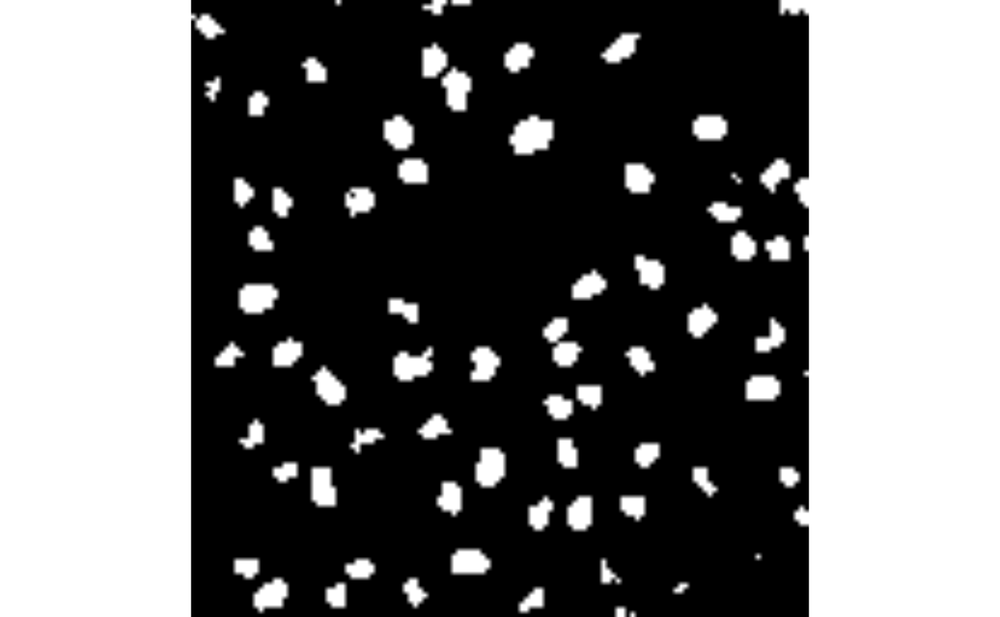
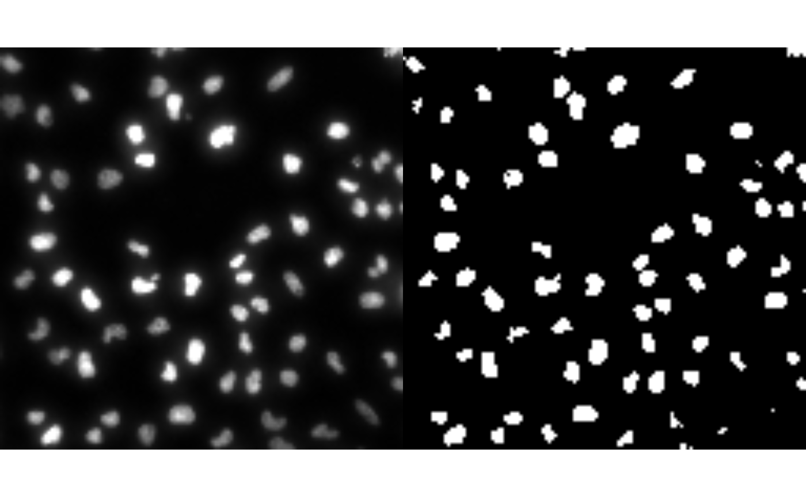

Introduction to `rome`
Hugo Gruson
EMBL Heidelberghugo.gruson@embl.de
Artür Manukyan
MDC-BIMSBartur-man@hotmail.com
24 May 2026
Source:vignettes/rome.rmd
rome.rmdIntroduction
rome
rome is a minimal R package to read and write multiscale OME-ZARR images.
It also provides helper and methods to manipulate the resulting
ome_zarr objects the same way one would manipulate
traditional arrays in R. For example, you can subset an
ome_zarr object using the [ operator, and the
subsetting will be applied to all levels of the multiscale OME-Zarr
object.
Installation
You can install the development version of rome like so:
# install.packages("pak")
pak::pak("Huber-group-EMBL/rome")Reading OME-ZARR data
Images
This is a basic example which shows you how to read a OME-ZARR image
of version 0.4. By default, the read will be performed lazily using
ZarrArray.
library(rome)
library(utils)
omezarrzip <- system.file("extdata", "test_ngff_image_v04.ome.zarr.zip", package = "rome")
dir.create(td <- tempfile())
unzip(omezarrzip, exdir = td)
x <- ome_read(td)
plot(x, 1)
Otherwise the read can be performed in memory as:
x <- ome_read(td, lazy = FALSE)Labels
Labels of image pyramids can also be read as images
omezarrzip <- system.file("extdata", "test_ngff_image_v04.ome.zarr.zip", package = "rome")
dir.create(td <- tempfile())
unzip(omezarrzip, exdir = td)
x <- ome_read(file.path(td, "labels/blobs"))
plot(x, all = TRUE)
Reading from S3 storage
For remote OME-ZARR files, you can use the
paws.storage::s3 client to read the data directly from the
S3 bucket without downloading it first:
Writing OME-ZARR data
Images
rome also provides utilities for writing OME-ZARR images for OME-NGFF versions 0.4 and 0.5.
library(EBImage)
img_file <- system.file("extdata", "example_RGB.png", package = "rome")
img <- readImage(img_file)
# write image pyramid
ome_img <- ome_write(img,
path = tempfile(fileext = ".ome.zarr"),
axes = c("x", "y", "c"),
version = "0.4",
storage_options = list(chunk_dim = c(64, 64, 1)))
plot(ome_img, 1)## Only the first frame of the image stack is displayed.
## To display all frames use 'all = TRUE'.Users can also define there own scaling factors for the image
pyramids. For a scalefactors with length three, the pyramid
will have four scales. Eac scale factor in the vector defines the scale
factor relative to the previous scale.
Labels
OME-ZARR label pyramids can be generated the same way. We first create our own label data using EBImage first.
library(EBImage)
# read the first frame of image
nuc <- readImage(system.file("images", "nuclei.tif", package = "EBImage"))
nuc <- getFrames(nuc)[[1]]
# threshold using otsu's method
nuc_th <- nuc > otsu(nuc)We can now write the label pyramid. Arguments are similar to how images are written.
ome_nuc_th <- ome_write(nuc_th,
path = tempfile(fileext = ".ome.zarr"),
version = "0.4",
scalefactors = c(2, 2, 3),
storage_options = list(chunk_dim = c(64, 64)),
type = "label")
plot(ome_nuc_th, 3)
Additional metadata information about labels can be provided using
the label_metadata argument.
# write label, version 0.4
ome_nuc_th <- ome_write(nuc_th,
path = tempfile(fileext = ".ome.zarr"),
version = "0.4",
scalefactors = c(2, 2, 3),
storage_options = list(chunk_dim = c(64, 64)),
type = "label",
label_name = "blobs",
label_metadata = list(
colors = list(
list(`label-value` = 1, rgba = list(255, 255, 255, 255)),
list(`label-value` = 2, rgba = list(0, 255, 255, 128))
),
properties = list(
list(`label-value` = 1, class = "A"),
list(`label-value` = 2, class = "B")
)
))If the path already includes an image pyramid, then we should define
a name (e.g. blobs) for the label pyramid associated with
the image.
td <- tempfile(fileext = ".ome.zarr")
# write image pyramid
ome_nuc <- ome_write(nuc,
path = td,
version = "0.4",
storage_options = list(chunk_dim = c(64, 64)))
ome_nuc_th <- ome_write(nuc_th,
path = td,
version = "0.4",
scalefactors = c(2, 2, 3),
storage_options = list(chunk_dim = c(64, 64)),
type = "label",
label_name = "blobs")## An image pyramid was found at '/tmp/RtmpfYBXGj/file1ced31925e16.ome.zarr', writing labels to 'labels/blobs'
Appendix
Session info
## R Under development (unstable) (2026-05-22 r90067)
## Platform: x86_64-pc-linux-gnu
## Running under: Ubuntu 24.04.4 LTS
##
## Matrix products: default
## BLAS: /usr/lib/x86_64-linux-gnu/openblas-pthread/libblas.so.3
## LAPACK: /usr/lib/x86_64-linux-gnu/openblas-pthread/libopenblasp-r0.3.26.so; LAPACK version 3.12.0
##
## locale:
## [1] LC_CTYPE=C.UTF-8 LC_NUMERIC=C LC_TIME=C.UTF-8
## [4] LC_COLLATE=C.UTF-8 LC_MONETARY=C.UTF-8 LC_MESSAGES=C.UTF-8
## [7] LC_PAPER=C.UTF-8 LC_NAME=C LC_ADDRESS=C
## [10] LC_TELEPHONE=C LC_MEASUREMENT=C.UTF-8 LC_IDENTIFICATION=C
##
## time zone: UTC
## tzcode source: system (glibc)
##
## attached base packages:
## [1] stats graphics grDevices utils datasets methods base
##
## other attached packages:
## [1] EBImage_4.55.0 rome_0.99.1 BiocStyle_2.41.0
##
## loaded via a namespace (and not attached):
## [1] rappdirs_0.3.4 sass_0.4.10 generics_0.1.4
## [4] tiff_0.1-12 SparseArray_1.13.2 bitops_1.0-9
## [7] jpeg_0.1-11 lattice_0.22-9 jsonvalidate_1.5.0
## [10] paws.common_0.8.9 digest_0.6.39 magrittr_2.0.5
## [13] evaluate_1.0.5 grid_4.7.0 bookdown_0.46
## [16] fftwtools_0.9-11 fastmap_1.2.0 Matrix_1.7-5
## [19] R.oo_1.27.1 jsonlite_2.0.0 R.utils_2.13.0
## [22] Rarr_2.1.8 BiocManager_1.30.27 httr2_1.2.2
## [25] textshaping_1.0.5 jquerylib_0.1.4 abind_1.4-8
## [28] cli_3.6.6 rlang_1.2.0 crayon_1.5.3
## [31] XVector_0.53.0 R.methodsS3_1.8.2 ZarrArray_1.1.0
## [34] DelayedArray_0.39.2 cachem_1.1.0 yaml_2.3.12
## [37] S4Arrays_1.13.0 tools_4.7.0 locfit_1.5-9.12
## [40] BiocGenerics_0.59.3 curl_7.1.0 R6_2.6.1
## [43] png_0.1-9 matrixStats_1.5.0 stats4_4.7.0
## [46] lifecycle_1.0.5 V8_8.2.0 S4Vectors_0.51.2
## [49] fs_2.1.0 htmlwidgets_1.6.4 IRanges_2.47.1
## [52] ragg_1.5.2 desc_1.4.3 pkgdown_2.2.0
## [55] bslib_0.11.0 glue_1.8.1 Rcpp_1.1.1-1.1
## [58] systemfonts_1.3.2 xfun_0.57 MatrixGenerics_1.25.0
## [61] paws.storage_0.9.0 knitr_1.51 htmltools_0.5.9
## [64] rmarkdown_2.31 compiler_4.7.0 RCurl_1.98-1.18